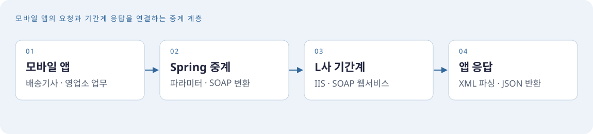
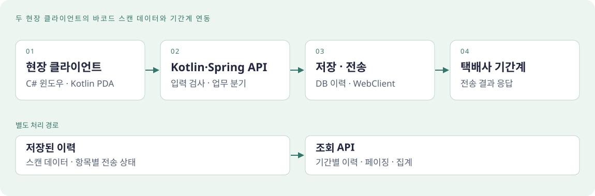
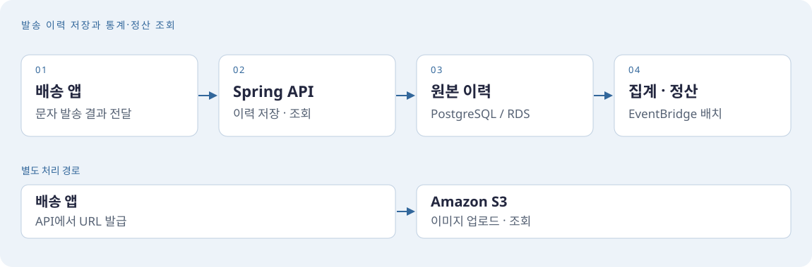
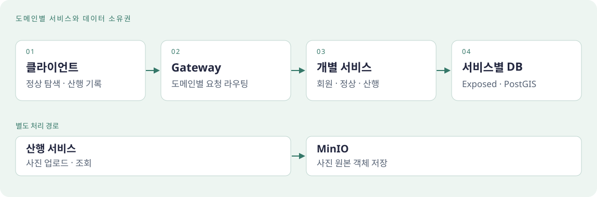
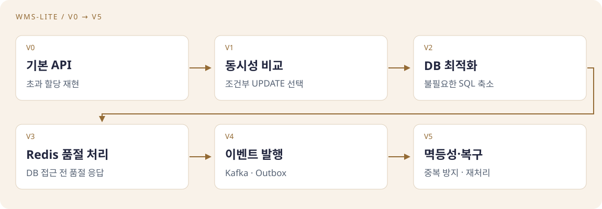

APPLICATION
백엔드 애플리케이션
Java·Spring 기반 모바일 업무 미들웨어를 유지보수하고, C# 윈도우 클라이언트와 Kotlin PDA 앱의 스캔 요청을 처리하는 Kotlin·Spring 연계 API를 개발합니다. 개인 프로젝트에도 Kotlin과 Spring Boot를 사용합니다.
JU HYUNJUN / BACKEND PORTFOLIO
택배사 기간계와 모바일 앱·현장 장비를 연결하는 백엔드 개발자 주현준입니다. Java·Spring 미들웨어 유지보수와 Kotlin·Spring 오토스캐너 연계 API 개발을 주요 업무로 맡고 있습니다. 주소 조회·메시지 이력·정산 기능을 개발하고, 개인 프로젝트 PeakLog와 WMS-Lite로 서비스 설계와 데이터 처리 경험을 넓히고 있습니다.
프로젝트 살펴보기EXPERIENCE & PROJECTS
012023.02 – 2023.09
K-디지털트레이닝에서 Java와 Spring Boot를 중심으로 웹 개발과 데이터베이스 활용을 학습했습니다.
교육 이력022023.11 – 현재
모바일 앱의 업무 중계 미들웨어를 유지보수하고 오토스캐너 연계 API를 개발합니다. 주소 조회와 메시지 이력·정산 기능도 담당했습니다.
업무 프로젝트032026.05 – 진행 중
PeakLog에서 PostGIS 기반 정상 탐색, GPS 정상 인증, 산행 기록·사진 관리를 개발하고 서비스별 데이터베이스를 분리했습니다.
PeakLog04개인 프로젝트 · 진행 중
WMS-Lite의 기본 API에서 동시성 오류를 재현하고 전략 비교, DB 최적화, Redis, 이벤트 발행과 장애 복구를 단계적으로 적용했습니다.
WMS-Lite2023.11 – 현재 · ㈜제이에이치씨 개발팀
01 / SELECTED PROJECTS
모바일·현장 장비와 기간계를 연결하는 업무, 주소 조회·메시지 관리와 개인 프로젝트의 개발 경험을 소개합니다.

모바일 앱 → Spring 중계 → 기간계 연동
L사 배송기사·영업소용 모바일 앱과 기간계 사이의 Spring 미들웨어를 유지보수합니다. 앱 요청을 SOAP 형식으로 변환하고 기간계 응답을 앱에서 사용하는 JSON 구조로 전달하며, 배송·집하 업무 API와 응답·예외 처리 흐름을 관리합니다.

바코드 스캔 → 연계 API → 택배사 기간계
C# 윈도우 클라이언트와 Kotlin PDA 모바일 앱의 바코드 스캔 데이터를 받는 Kotlin·Spring API를 개발합니다. 스캔 이력을 저장하고 택배사 기간계에 전송하며, 항목별 전송 결과와 이력 조회 기능을 제공합니다.

주소 입력 → 정제·검색 → 좌표 응답
표기 방식이 일정하지 않은 배송지 주소를 정제하고 좌표를 조회하는 API를 개발했습니다. 검색 쿼리와 인덱스를 개선하고 커넥션 풀 고갈 원인을 분석해 응답 지연과 타임아웃을 줄였습니다.

발송 결과 → 이력 저장·집계 → 정산 조회
배송 앱의 문자 발송 이력과 통계·정산 API를 개발했습니다. 원본 이력에 발송 일시 기준 RANGE 파티셔닝을 적용해 조회 범위를 줄이고 보관 기간이 지난 데이터를 파티션 단위로 삭제하도록 설계했습니다.

정상 탐색 → GPS 인증 → 산행 기록·사진 관리
PostGIS로 주변 정상을 탐색하고 GPS 정상 인증과 산행 기록을 관리하는 백엔드를 개발했습니다. 회원·정상·산행 서비스를 MSA로 구성하고 데이터베이스를 분리했으며, 산행 사진은 MinIO 객체 스토리지에 저장합니다.

기본 API → 전략 비교 → 성능 개선 → 이벤트·복구
테이블과 기본 인덱스, 재고 할당 API를 만든 V0에서 출발한 홈랩 프로젝트입니다. 동시성 제어 전략을 비교해 조건부 UPDATE를 선택한 뒤 DB 최적화, Redis 품절 처리, Kafka·Outbox와 장애 복구를 단계적으로 적용했습니다.
02 / TECH STACK
API 개발부터 데이터 조회·저장, 배포와 성능 분석까지 경험한 기술입니다.
APPLICATION
Java·Spring 기반 모바일 업무 미들웨어를 유지보수하고, C# 윈도우 클라이언트와 Kotlin PDA 앱의 스캔 요청을 처리하는 Kotlin·Spring 연계 API를 개발합니다. 개인 프로젝트에도 Kotlin과 Spring Boot를 사용합니다.
DATA
업무 연계 API는 MyBatis로 스캔 이력과 전송 결과를 관리하고, JPA·QueryDSL로 주소 조회 조건과 데이터 접근을 구현했습니다. PeakLog에서는 Exposed와 PostGIS로 위치 기반 검색을 제공합니다.
INFRASTRUCTURE
Spring 애플리케이션의 운영·유지보수와 AWS 기반 API 배포를 경험했습니다. 오토스캐너 API는 WAR·Tomcat으로 구동하며, APM과 부하 테스트로 병목을 분석하고 개인 프로젝트는 컨테이너와 기능 테스트를 활용합니다.
MESSAGING & STORAGE
WMS-Lite에서 DB 예약을 최적화한 뒤 Redis Lua로 품절 처리를 개선하고 Kafka·Outbox로 후속 이벤트를 분리했습니다. PeakLog의 산행 사진은 MinIO에 저장합니다.
03 / EDUCATION & CERTIFICATIONS
학점은행제 · 졸업
그린컴퓨터아카데미 · Java / React
두원공과대학교 · 졸업
한국산업인력공단
한국정보통신자격협회
04 / CONTACT
요구사항을 데이터와 API로 구체화하고, 운영 중 발생하는 문제를 개선하는 개발을 지향합니다. 새로운 환경에서도 꾸준히 배우며 함께 성장하고 싶습니다.